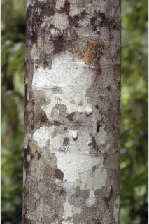

Images :



| Habit : | Large trees , up to 35 m tall. |
| Leaves : | Leaves simple , alternate , spiral , clustered at the twig ends; petiole 2 cm long, ferruginous tomentose , with 2 pairs of stout, densely tomentose spurs ; lamina 15-44 x 10-17 cm, oblanceolate , upper half broadly triangular with acuminate apex , lower half narrow with cuneate base, margin entire , coriaceous , ferruginous tomentose beneath, glabrous above; midrib flat and glabrous above; secondary_nerves 22-32 pairs; tertiary_nerves broadly reticulate . |
| Inflorescence / Flower : | Inflorescence terminal panicle , brown tomentose ; flowers polygamous , white. |
| Fruit and Seed : | Drupe ellipsoid and little exerted from torus , 2.2 cm long, rusty tomentose , 1-seeded . |